A repaired world.
A clearer working factory.
Four gameplay proposals and 32 individual asset/group concept sheets, based on the M10 audit and the existing cream, navy and coral direction. Open any image for its full-resolution original.
These are generated concept illustrations, not runtime screenshots or validated 3D designs. The flat finish requires renderer/shader work alongside geometry, textures and lighting. Diagram dimensions, port arrows and depicted connections are illustrative; implementation must follow the current simulation contracts.
Gameplay concepts

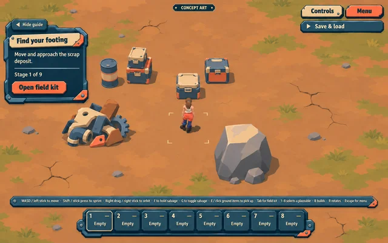

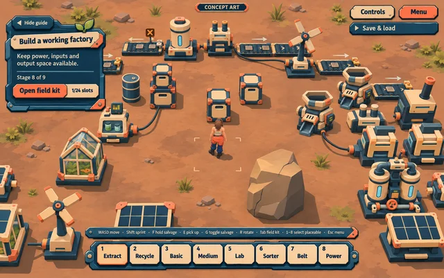

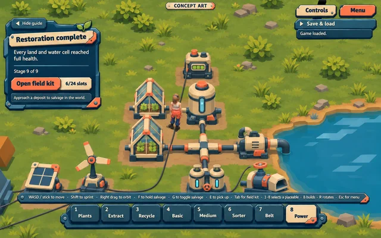

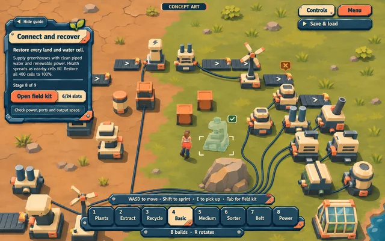
All 19 placeable kinds

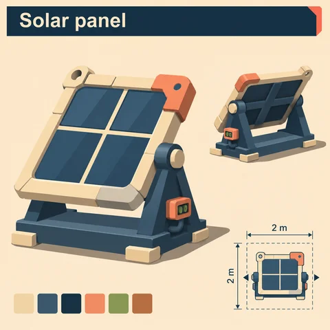

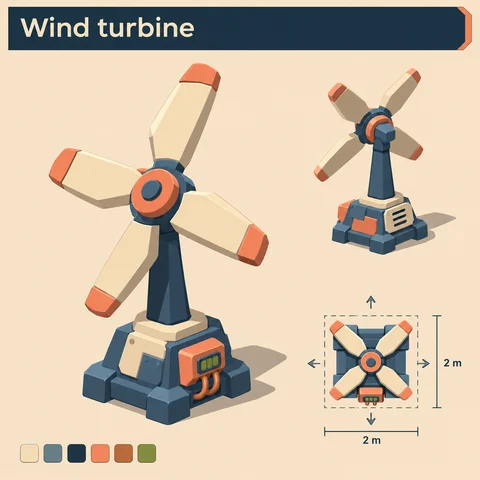

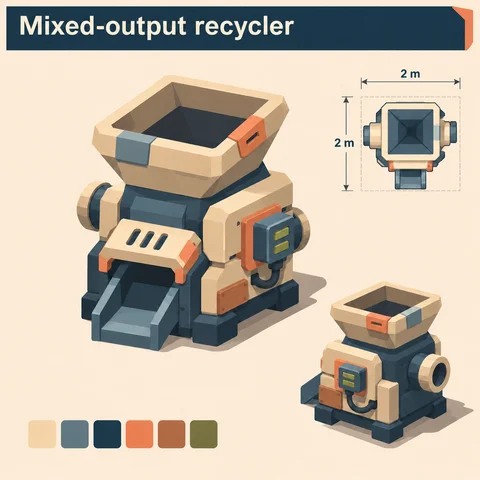

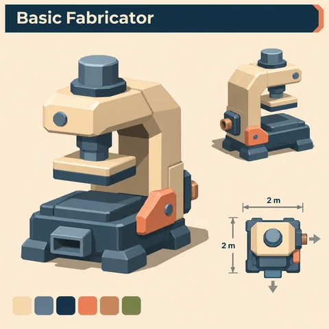

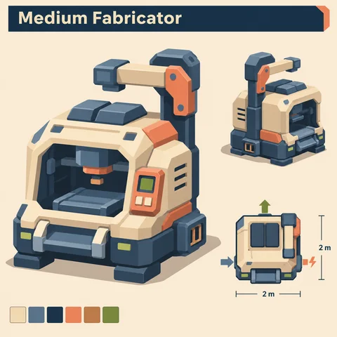

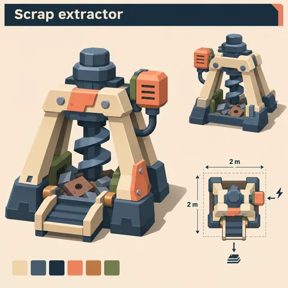

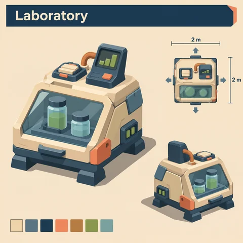

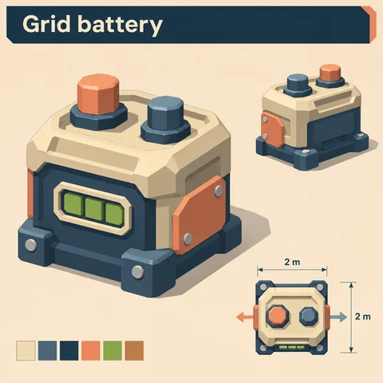

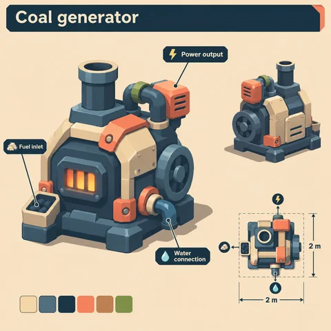

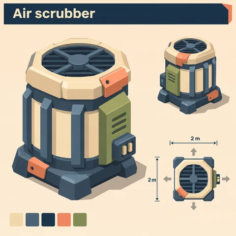

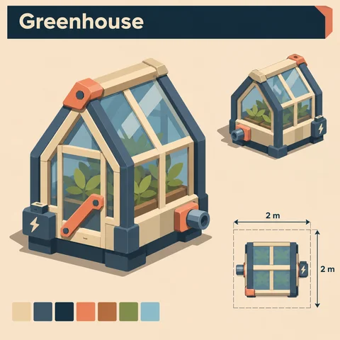

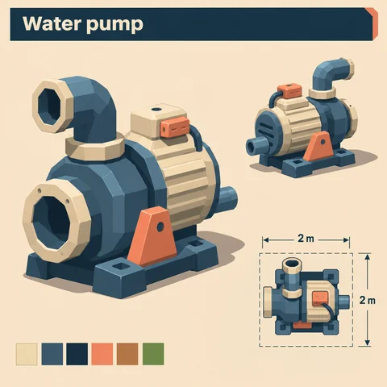

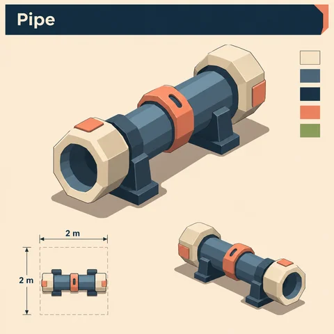

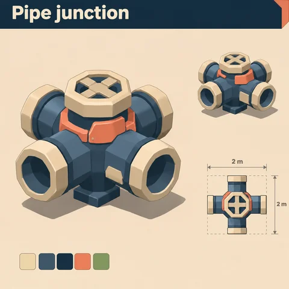

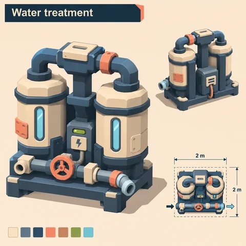

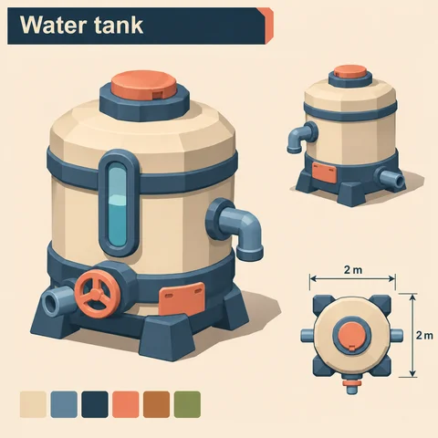

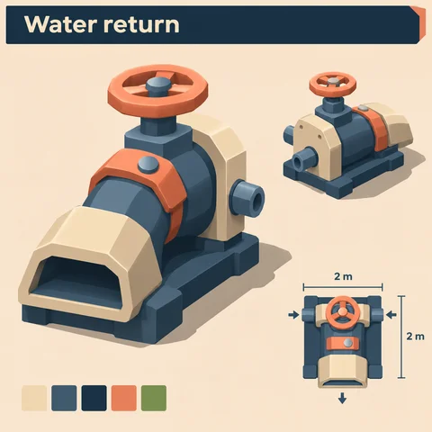

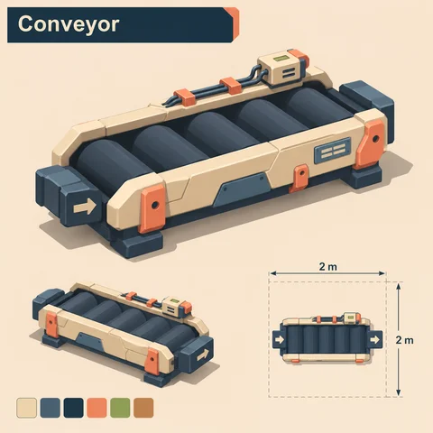

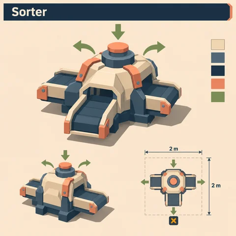
Terrain, water and deposits

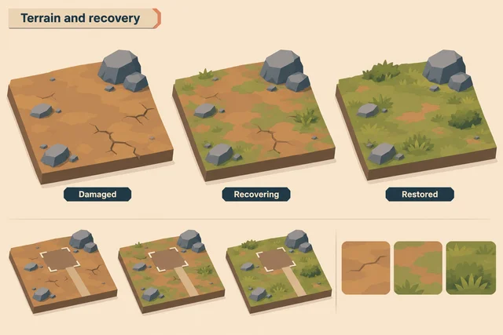

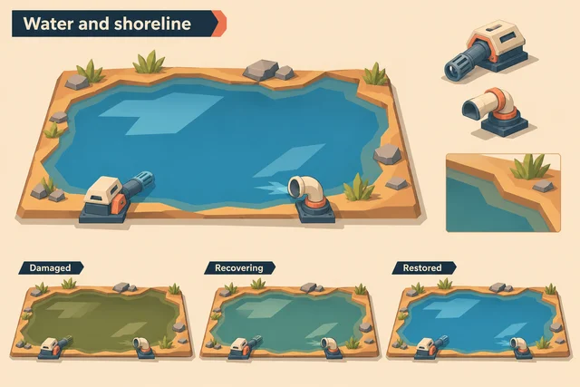

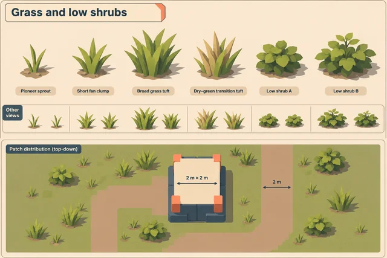

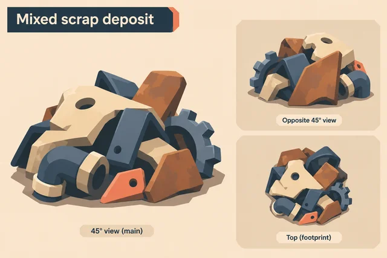

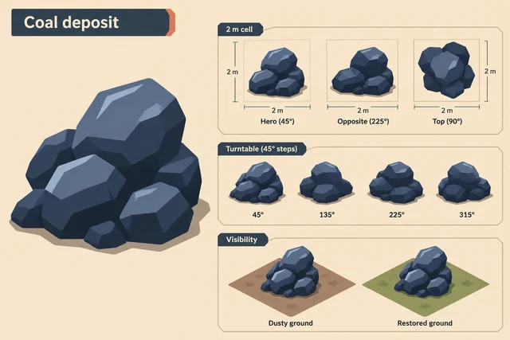

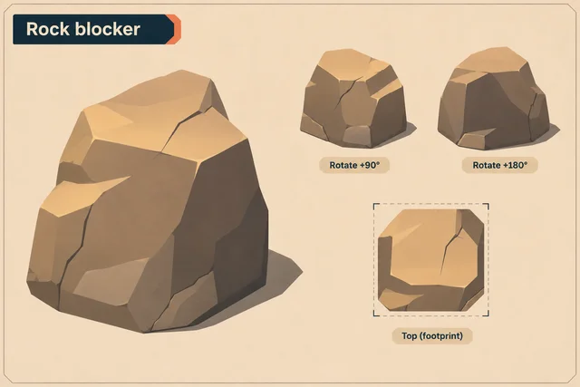
Character finish

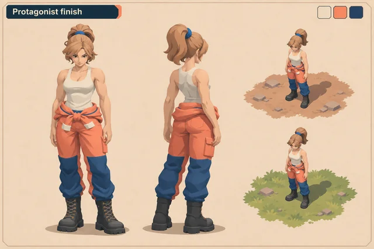
Ports and placement

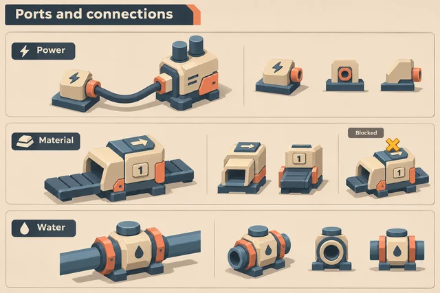

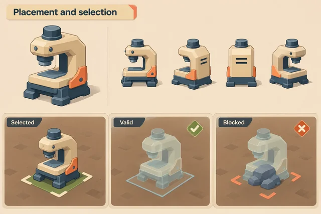
Movable props

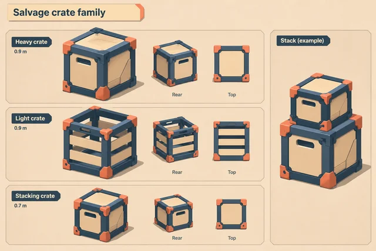

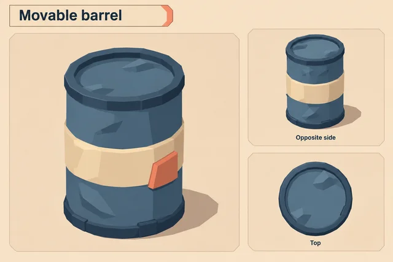

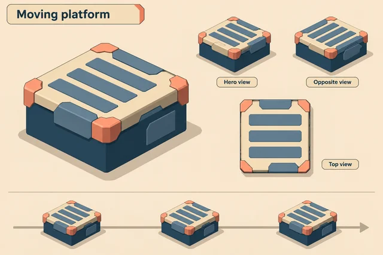
Favicon proposal

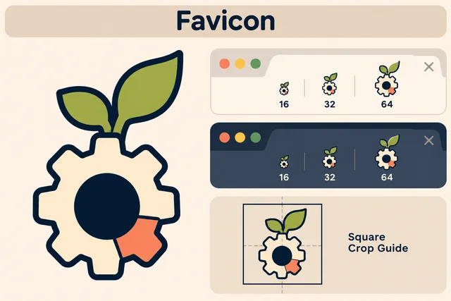